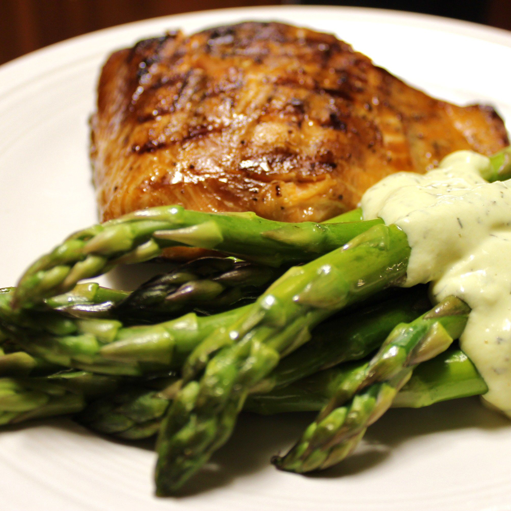

Garlic Asparagus

Description
This garlic asparagus recipe will leave you wanting more! It's worth it how weird your pee will smell.
Ingredients
- 3 tablespoons butter or margarine
- 1 bunch fresh asparagus
- 3 cloves garlic, chopped
Recipe
- Melt butter or margarine in a large skillet over medium-high heat. Add asparagus spears and garlic; cover and cook until asparagus is tender, 5 to 10 minutes.
- If you like your asparagus well done, reduce heat and cook an additional 10 minutes.